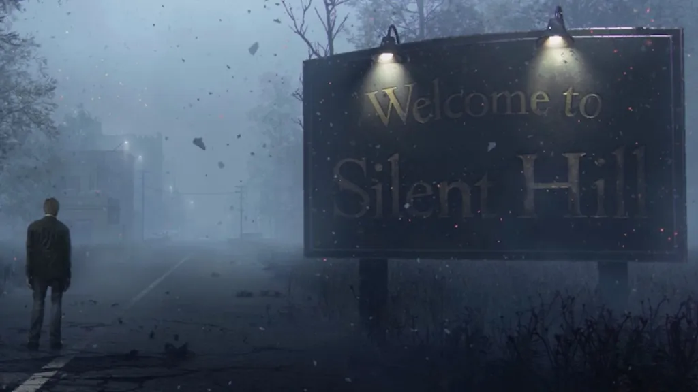
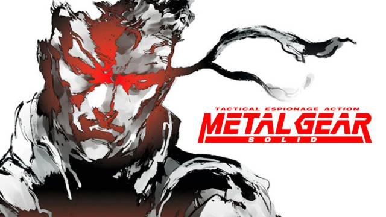

Resident Evil
Resident Evil, or Biohazard in Japan and parts of Southeast Asia, is a Japanese horror game series and media franchise created by Capcom. It consists of survival horror, third-person shooter and first-person shooter games, with players typically surviving in environments inhabited by zombies and other frightening creatures. The franchise has expanded into other media, including a live-action film series, animated films, television series, comic books, novels, audio dramas and merchandise. Resident Evil is the highest-grossing horror franchise.

Silent Hill
Silent Hill (Japanese: サイレントヒル, Hepburn: Sairento Hiru) is a horror anthology media franchise centered on a series of survival horror games created by Keiichiro Toyama and published by Konami. The first four video games in the series, Silent Hill, Silent Hill 2, Silent Hill 3, and Silent Hill 4: The Room, were developed by an internal group called Team Silent, a development staff within former Konami subsidiary Konami Computer Entertainment Tokyo.

The Last Of Us
The Last of Us is a 2013 action-adventure game developed by Naughty Dog and published by Sony Computer Entertainment. Players control Joel, a smuggler tasked with escorting a teenage girl, Ellie, across a post-apocalyptic United States. The Last of Us is played from a third-person perspective. Players use firearms and improvised weapons and can use stealth to defend against hostile humans and cannibalistic creatures infected by a mutated fungus. In the online multiplayer mode, up to eight players engage in cooperative and competitive gameplay.

Metal Gear
Metal Gear (Japanese: メタルギア, Hepburn: Metaru Gia) is a franchise of stealth games created by Hideo Kojima. Developed and published by Konami, the first game, Metal Gear, was released in 1987 for MSX home computers. The player often takes control of a special forces operative (usually Solid Snake or Big Boss), who is assigned the task of finding the titular superweapon, "Metal Gear", a bipedal walking tank with the ability to launch nuclear weapons